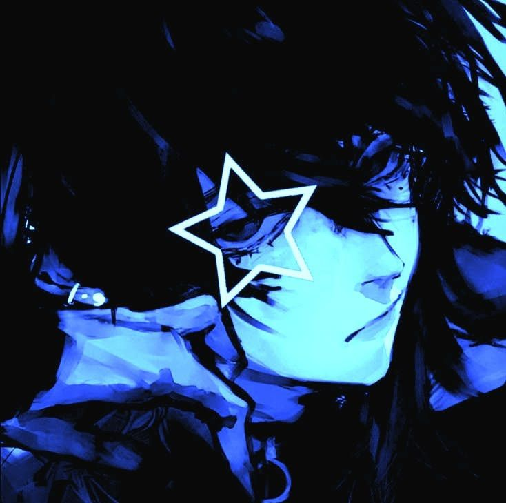

♛

NOVA_PHANSE
KAISER · ИМПЕРАТОР
LEX MEA
♛ закон империи
NIHIL EXTRA ME
♛ ничего, кроме меня
◀
▶
ИМПЕРАТОРСКИЙ ГИМН
— / N
▶▶
🔊
70
пассивный
серьёзный
✦ ИМПЕРИЯ В СЕТИ ✦
✈
Telegram
◈
Discord
▣
Steam
✧
LEX MEA
✧
It's a game game, but I hate going out against German tanks.
War Thunder.
✧
✧
★
my favourite games
★
War Thunder
Arma 2
RimWorld
Project Zomboid
🕸 Tactical gamer · 🕸 Survivor · 🕸 Hating German tanks since forever
✧
NIHIL EXTRA ME
✧
Nothing outside of me.
(Nihil extra me)
🕷 I hate going out.
Pronouns: me. And only me.
наведи, чтобы развернуть
† KAISER †
࿇ Too skilled TO BE SAINE. ࿇ ༒
✦ kaiser ✦
It's a game game, but I hate going out against German tanks.
✦ war thunder ✦
"Too sharp to be sane, too sane to break."
✦ nova ✦
"I don't orbit — I'm the one everything else fades into."
✦ nova ✦
✧
MY WORKS
✧
♛
NOVA
novaphanse.github.io
❖
MAT TVOYA
/mat-tvoya
◈
GETO
/geto
Ψ
ПСИХ
/psih_card